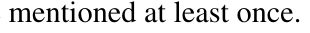

ACM-ICPC World Finals 2012 · Problem F
Adam carries a bunch of keys attached to key rings, some of which may be connected to each other. The rings are common key rings, so a key can be attached to or detached from a ring by sliding along the spiral. In the same way, two rings can be connected or disconnected. Adam wants to give some of the keys to Brenda. Since manipulating the keys and rings is often an annoying task (and also dangerous to one’s fingernails), Adam is looking for a way to minimize the number of key and ring operations.
Every key attachment, key detachment, ring connection, or ring disconnection is considered one operation. Since manipulating two rings is significantly easier than sliding a key, we first want to minimize the number of keys being detached and attached. Among solutions with the same minimal number of key operations, you need to find the one with the minimal number of ring connections and disconnections.
When all the operations are complete, Adam and Brenda must each carry one connected group of rings and keys. The only exception is when either of them would have no keys at all—in such a case, no ring is needed. Each key must be attached to exactly one ring. Some rings (but not keys) may be considered leftovers and may remain disconnected from the two groups.
The left side of the following figure shows an initial configuration consisting of four keys on three rings. Adam wishes to give Brenda the two keys labeled N and R. This can be accomplished by two key operations and one ring operation, resulting in the configuration shown on the right side of the figure.

Each test case contains one or more lines, each containing a two letter string. Lowercase letters (a - z) represent key rings and uppercase letters (A - Z) represent keys. The two letters on a line specify either a key attached to a ring or two rings connected together. The end of each test case is denoted by a line containing the digit zero.
Keys denoted by letters A through M remain with Adam, and keys denoted by letters N through Z are given to Brenda.
No line contains two uppercase letters. No pair of letters are specified more than once in the same test case. Each key is connected to exactly one ring. There are no “circles” in the ring configurations (disconnecting any two rings will increase the number of connected groups). All existing keys and rings are mentioned at least once.
For each test case, display the case number followed by the minimal number of key attach/detach operations and the minimal number of ring connect/disconnect operations.
If there is no way to split the keys as requested, display the case number and the word impossible instead of the two integers.
ab bc aA aN Rb cB 0 aA bB Cc 0 aA aZ 0 aA bB cC xX yY ax xb by yc 0
Case 1: 2 1 Case 2: 0 2 Case 3: impossible Case 4: 0 7